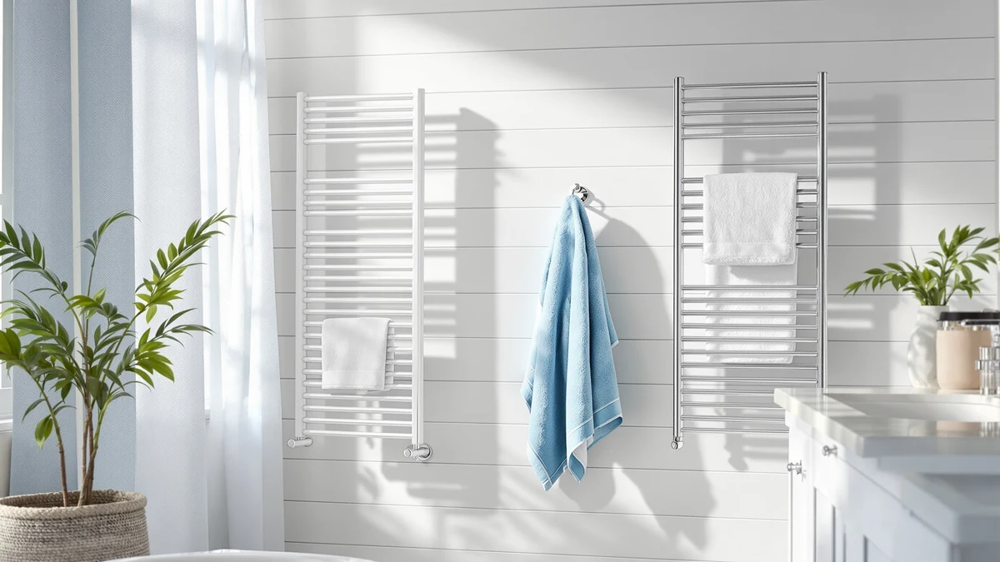

Best Towel Warmer With Wifi of 2026: 7 Top Picks
Prices and picks verified as of August 2026. Independent, reader-supported reviews.


Quick Answer
The best towel warmer with wifi for most people is the SereneLife WIFI Luxury Rectangle Towel. It pairs app scheduling with a stainless steel bucket build at $88.99, which undercuts the wall-mounted racks in this guide by $71 or more.
Our pick: SereneLife WIFI Luxury Rectangle Towel — $88.99 Check Price on Amazon
Bottom line: our top pick is the SereneLife WIFI Luxury Rectangle Towel Warmer - Spa & at $99.99. The best budget option is the Lagute Towel Warmer for Bathroom at $71.99.
Things to Know Before You Buy
- A wifi towel warmer adds scheduling, not faster heat. App control lets you start the unit from bed or set a recurring morning warm-up, but the heating element works like the one on a dial model.
- Buckets and racks solve different problems. A bucket like our SereneLife pick warms one or two folded towels, while a wall rack like the Aquatrend warms and dries several hanging towels at once.
- Expect to pay $71.99 to $179.17. The bucket warmers in this guide stay under $95, and the larger units start at $129.99.
- All seven picks use stainless steel. The material matters in a humid bathroom, where coated frames tend to corrode first at the joints.
- Renters have a clear lane. Wall racks need drilling and a nearby outlet, so anyone who cannot modify walls belongs with a plug-in bucket they can pack and move.
Stepping out of a shower into a cold towel is a small daily failure, and the best towel warmer with wifi fixes it by moving the on switch to your phone. Instead of remembering to press a button half an hour before you bathe, you set a schedule once and warm towels show up on time, morning after morning.
After comparing seven app-controlled models across both major formats, we recommend the SereneLife WIFI Luxury Rectangle Towel for most people. At $88.99 it costs less than any wall-mounted rack in this guide. The stainless steel bucket needs no installation, and the app handles the scheduling that makes a smart warmer worth buying in the first place.
The rest of our picks cover the useful exceptions. The Lagute undercuts everything at $71.99, the Aquatrend and Evokor warm multiple towels for busy family bathrooms, and the KEG splits the difference at $129.99. Below, we explain how we chose these seven and where each one falls short.
Why You Should Trust Us
I'm Ilane Tall, and I run Best Towel Warmers, where I have researched and compared towel warmers across more than a dozen buying guides, from budget buckets to hardwired racks. For this guide on the best towel warmer with wifi, I compared app features and setup steps for each finalist and read owner feedback with a focus on connectivity complaints. I also tracked prices for several weeks before settling on these seven.
We earn a commission if you buy through our links, but the commission stays the same across the products here. No brand paid for placement, and the ranking reflects our judgment alone.
How We Picked
We started with the towel warmers already covered across our site and kept only the models that qualify as a genuine wifi towel warmer, meaning app control rather than a dial or a basic countdown. That single filter eliminated most of the field; the dial and timer models live in our timer guide instead. The one partial exception here is the Evokor, which pairs the largest format in the group with timer-first controls and earns its spot on size.
From there we applied three more requirements. Each pick needed a stainless steel build, since coated frames corrode in bathroom humidity. Each needed a 4-star owner rating. And the group needed to span both formats and a usable price range, which is how we landed on a spread from the $71.99 Lagute to the $179.17 Evokor.
How We Compared
We could not wire seven warmers into one bathroom at once, so we built a structured comparison instead. For each model we catalogued the manufacturer's published specs and walked through the app setup documentation. Then we logged the most common complaints in owner reviews. We paid particular attention to wifi pairing failures, since a smart warmer that drops its connection performs worse than a plain one with a reliable switch.
We also weighted price against format. A wifi bucket and a wifi rack do different jobs, so we scored each pick against its direct rivals rather than against the whole field. That is why an $88.99 bucket and a $159.99 rack can both earn a recommendation in the same guide.
Our Picks

SereneLife WIFI Luxury Rectangle Towel
What we like
- App scheduling starts the warmer before you get out of bed
- Stainless steel construction holds up in bathroom humidity
- At $88.99, it costs less than any rack-style pick in this guide
- Rectangular shape takes a full-size folded bath towel
Flaws but not dealbreakers
- Warms one or two towels at a time, not a family's worth
- Takes up counter or floor space instead of wall space
- Wifi setup requires a few minutes with the app before first use
| Material | Stainless steel |
| Size | — |
The SereneLife WIFI Luxury Rectangle Towel wins this guide by doing the one thing a wifi towel warmer must do, then staying out of the way. You set a warming schedule in the app once, and the bucket handles your routine from there. There are no wall anchors to set and no nightly dial ritual: you place it near an outlet, connect the app, and move on. Among the app-controlled models we compared, it hits the most usable balance of size, build, and price.
The main trade-off comes with the format. A bucket warms the towels you put inside it and nothing more, so a household of four will find the capacity tight on busy mornings. We also wish SereneLife published fuller dimensions for this model. Still, at $88.99 it undercuts its own sibling, the $94.99 Rectangular Bucket, and it delivers the same core promise: a hot towel waiting when your shower ends, started from your phone.

Lagute Towel Warmer for Bathroom
What we like
- Lowest price of our seven picks at $71.99
- App control at a price where most rivals offer only a dial
- Stainless steel build matches picks that cost $17 to $107 more
Flaws but not dealbreakers
- Compact capacity suits one towel at a time
- Lagute has a shorter track record than SereneLife in this category
| Material | Stainless steel |
| Size | — |
The Lagute earns its runner-up spot on price. At $71.99 it is the cheapest wifi towel warmer in this guide, $17 below our top pick, and it gives up less than that gap suggests: the build is the same stainless steel and the app covers the same scheduling work. Owners rate both 4 stars.
We rank it second because SereneLife has the longer record in this category; three of the seven picks here come from that brand, and its models are the ones we would trust first for a gift or a guest bathroom. Buy the Lagute when the $17 saving matters or when the SereneLife models sit out of stock. You give up some pedigree, not the core function.

SereneLife Rectangular Towel Warmer Bucket
What we like
- Roomier rectangular format for bulkier towels or robes
- Same stainless steel build as our top pick
- App scheduling like the rest of the SereneLife lineup
Flaws but not dealbreakers
- Costs $6 more than our top pick for a similar job
- Shares the bucket format's limits: no towel drying, counter space required
| Material | Stainless steel |
| Size | — |
This is the pick for people who liked everything about our winner but want more room. The Rectangular Towel Warmer Bucket runs $94.99, six dollars above the WIFI Luxury Rectangle, and the two share a brand and a stainless steel build, with the same 4-star rating on both. The extra spend buys a format we would choose for bulkier bath sheets and robes rather than standard towels.
Choose between the two SereneLife buckets on price and availability rather than agonizing over features. When they sit within a few dollars of each other, as they do now, our top pick remains the better value for a wifi towel warmer. When this one drops below $88.99 in a sale, the order flips.

Aquatrend WiFi Heated Towel Rack
What we like
- Warms and dries several hanging towels at once
- Costs $19.18 less than the Evokor, the other full-size rack here
- Frees floor and counter space in a tight bathroom
- Wifi app replaces the wall-switch ritual
Flaws but not dealbreakers
- At $159.99, it costs $71 more than our top bucket pick
- Mounting requires drilling, which rules out most rentals
- An outlet needs to sit near the mounting spot
| Material | Stainless steel |
| Size | — |
The Aquatrend WiFi Heated Towel Rack is the affordable path into wall-mounted warming. Racks cost more than buckets across the board, and at $159.99 this one sits $19.18 under the Evokor while carrying the same stainless steel construction and 4-star rating. For a shared bathroom where two or three people shower back to back, the rack format earns its premium: towels hang to warm and dry rather than waiting folded in a tub.
Committing to a rack means committing to installation. You drill into the wall and need power nearby, and the warmer stays behind when you move. Weigh that against years of daily use before choosing it over a bucket. For homeowners who plan to stay put, we think the Aquatrend is the smarter long-term buy among the wifi towel warmers here; for renters, it is the wrong one.

Evokor Towel Warmer with Timer
What we like
- Largest footprint in this guide at 35.4 by 18.11 inches
- Built-in timer runs your schedule without touching a phone
- Stainless steel frame with room for multiple towels
Flaws but not dealbreakers
- Most expensive pick here at $179.17
- Timer-first controls appeal less if the app is the reason you came
- Needs nearly three feet of clear wall space
| Material | Stainless steel |
| Size | 35.4" × 18.11" |
The Evokor takes the opposite bet from the rest of this guide: it leads with a physical timer rather than a phone app. If someone in your household finds app setup a chore, or if your home network drops often, a timer you set once on the unit itself can beat a smart feature nobody maintains. At 35.4 by 18.11 inches, it is also the biggest warmer we recommend, sized for a family bathroom rather than a powder room.
Its price is the sticking point. At $179.17 the Evokor costs more than any other pick, including $19.18 more than the Aquatrend, which covers similar wall-rack duty with app control included. We recommend the Evokor for the specific buyer who wants maximum size and set-and-forget timing; most shoppers hunting for the best towel warmer with wifi will land better with the Aquatrend or a SereneLife bucket.

KEG Smart WiFi Towel Warmer
What we like
- Splits the price gap at $129.99, between the sub-$95 buckets and $159.99-plus racks
- KEG sells this model in a dedicated wifi version, so app control sits at the center of the design
- Stainless steel build like the rest of our picks
Flaws but not dealbreakers
- KEG publishes fewer specs than SereneLife or Evokor, dimensions included
- The brand appears less often across our other towel warmer guides
| Material | Stainless steel |
| Size | Wifi Version |
The KEG Smart WiFi Towel Warmer fills the price gap in the middle of this guide. At $129.99 it asks $35 more than the priciest SereneLife bucket and $30 less than the Aquatrend rack, and KEG sells it in a dedicated wifi version, which tells you where the brand focused its effort. Owners rate it 4 stars, in line with the rest of the field.
Our hesitation concerns information, not performance. KEG lists fewer specifics than its rivals, dimensions included, so you buy with less certainty about fit. If your budget lands near $130 and your bathroom can absorb some guesswork, the KEG makes a reasonable middle path to a wifi towel warmer. If you need exact measurements before drilling or clearing a shelf, pick the Evokor or a SereneLife bucket instead.
SereneLife WiFi-enabled Towel Warmer Bucket
What we like
- Same stainless steel bucket formula as our other SereneLife picks
- Wifi-enabled by name and by design
- Priced 4 cents under its Rectangular sibling
Flaws but not dealbreakers
- Overlaps almost completely with the $94.99 Rectangular Bucket
- Offers no clear reason to pick it over our $88.99 top choice at current prices
| Material | Stainless steel |
| Size | — |
SereneLife sells several wifi bucket warmers that differ less than their listings suggest, and this WiFi-enabled Towel Warmer Bucket is the third to earn a spot in our guide. At $94.95 it sits 4 cents under the Rectangular Bucket and $5.96 above our top pick, with the same stainless steel build and the same 4-star owner rating across the trio.
We include it for a practical reason: SereneLife listings rotate in and out of stock, and prices shift between the near-twins week to week. Treat this model as a substitute rather than a distinct choice. Whichever of the three SereneLife buckets costs least on the day you shop is the one to buy, and the wifi towel warmer experience will match either way.
Quick Comparison
| Product | Material | Price | Rating | Best for | Get it |
|---|---|---|---|---|---|
| SereneLife WIFI Luxury Rectangle Towel | Stainless steel | $88.99 | 4 | Best overall wifi towel warmer | View on Amazon → |
| Lagute Towel Warmer for Bathroom | Stainless steel | $71.99 | 4 | Lowest price with app control | View on Amazon → |
| SereneLife Rectangular Towel Warmer Bucket | Stainless steel | $94.99 | 4 | Roomier bucket for bath sheets and robes | View on Amazon → |
| Aquatrend WiFi Heated Towel Rack | Stainless steel | $159.99 | 4 | Wall rack for shared bathrooms | View on Amazon → |
| Evokor Towel Warmer with Timer | Stainless steel | $179.17 | 4 | Biggest size, timer-first control | View on Amazon → |
| KEG Smart WiFi Towel Warmer | Stainless steel | $129.99 | 4 | Mid-price smart middle ground | View on Amazon → |
| SereneLife WiFi-enabled Towel Warmer Bucket | Stainless steel | $94.95 | 4 | Stock-friendly SereneLife substitute | View on Amazon → |
Is a wifi towel warmer worth it over a regular one?
The wifi matters if your schedule is regular.
Should I buy a bucket warmer or a wall-mounted rack?
Buy a bucket if you rent, move often, or warm towels for one or two people; our $88.99 SereneLife pick needs nothing but an outlet.
The Competition
The wifi towel warmer field stays narrow, and most of the models we cover elsewhere on this site fell out at the first cut: dial-only and basic-timer warmers, including several of our favorites from the under-$100 roundup, offer no remote control at all. They are good machines in the wrong guide.
Within the seven finalists, the gaps came down to price and information rather than failure. The Evokor came closest to a top spot on size, but its $179.17 price and timer-first controls make it a specialist choice. The KEG lost points for thin published specs. And the two extra SereneLife buckets never separated themselves from the $88.99 winner; they trail it on price while matching it on material and rating, which is the definition of a runner-up field.
Frequently Asked Questions
Is a wifi towel warmer worth it over a regular one?
The wifi matters if your schedule is regular. App control lets you set a recurring warm-up before your usual shower time, so the towel is ready without any button pressing. If you shower at random hours, a simple dial or timer model does the same job for less money, and our timer guide covers those.
Should I buy a bucket warmer or a wall-mounted rack?
Buy a bucket if you rent, move often, or warm towels for one or two people; our $88.99 SereneLife pick needs nothing but an outlet. Buy a rack like the $159.99 Aquatrend if you own your home and several people shower daily, since a rack warms and dries multiple towels at once but requires drilling.
Do wifi towel warmers work without internet?
The heating works, but the convenience does not. A wifi warmer still heats using its onboard controls if your network drops, while scheduling and remote start depend on the connection. If your home wifi is unreliable, buy the Evokor, which runs on a built-in timer instead of an app.
Which one should I buy if I stop reading here?
The SereneLife WIFI Luxury Rectangle Towel is the best towel warmer with wifi for most people. It costs $88.99, schedules from your phone, needs no installation, and comes from the brand with the deepest track record in this category. Pick the Aquatrend instead only if you specifically want a wall-mounted rack.